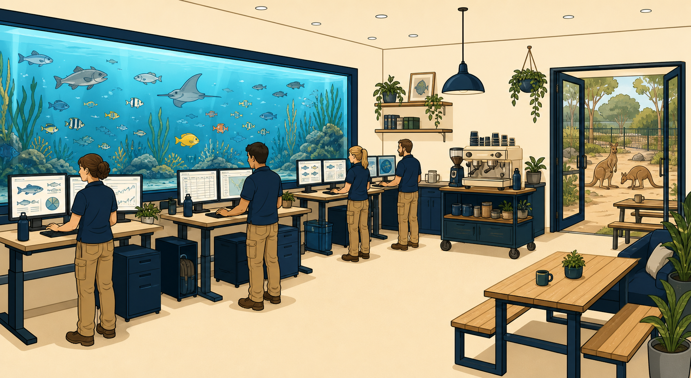
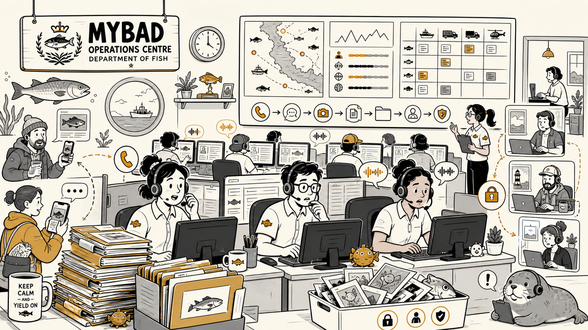
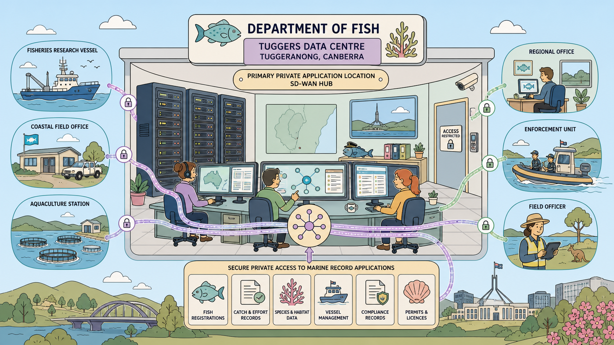
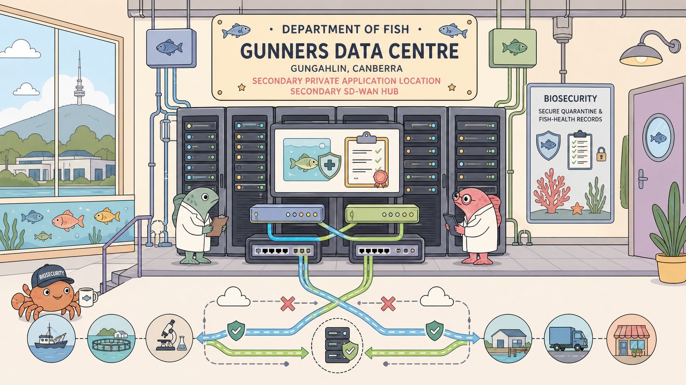
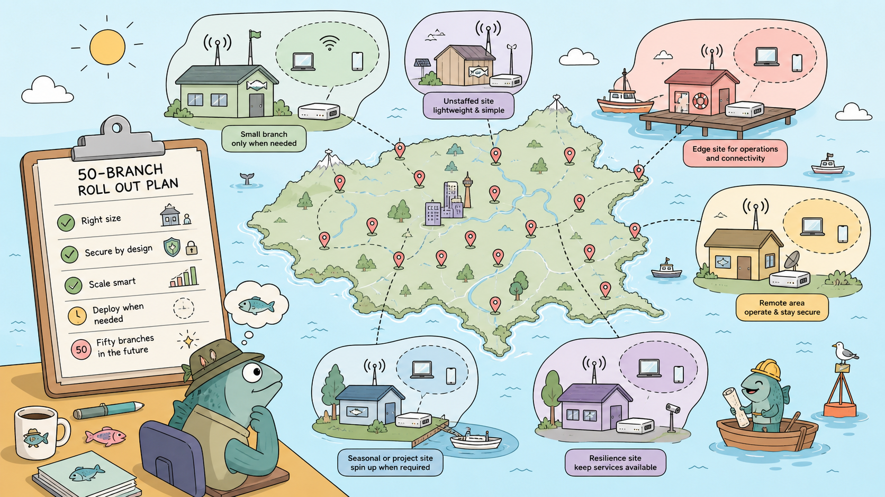

Fysh · the unseen executive
No employee has met Fysh in person. Fysh appears only in Microsoft Teams meetings, never enables the camera, and uses a generic fish silhouette as the profile image.
Fysh introduces the constraints, deadlines and audits — and asks for one-sentence justifications no one wants to give.
Teams status is always “Available”, even at 03:00. When Fysh joins a Teams call, the mic-off icon appears next to the fish silhouette and a broad, deadline-heavy request arrives seconds later. Contradictory clues may appear in any session — the truth is never confirmed.
Where the story actually happens
One headquarters, one contact centre, two data centres — and everything else appears only when the operational need does. The story-growth rule forbids adding sites just to make the diagram larger.

images/prompts.txt.National Zoo and Aquarium, Canberra. Home to the Division of Fish and the origin of the Secure Waters programme. Aquarium wall behind operations, Clown Fish Coffee inside, Roo Coffee outside. Meeting rooms named after exotic fish.
- FortiSASE tenant
- Identity services
- First private app APP-ZOO-CASE-01
- SIA / SSA / SPA

images/prompts.txt.Public intake for calls, reports, photographs and case information. Starts as pure remote-user workload driving SIA + SSA, and later becomes a full SD-WAN branch when voice quality has to be steered.
- Remote workers
- Voice quality
- SD-WAN health & SLA
- Citizen-data protection

images/prompts.txt.Tuggeranong, Canberra. Hosts APP-TUG-MARINE-01 — the Marine records application. Primary hub for private access and the primary side of the eventual dual-hub SPA design.
- Private access
- SD-WAN hub
- Dual-hub SPA
- Explicit private app

images/prompts.txt.Gungahlin, Canberra. Hosts APP-GUN-BIOSEC-01 — the Biosecurity application. Secondary hub — symmetric with Tuggers so failure of either hub does not orphan sites.
- Redundant private access
- Failover paths
- Multi-region design

images/prompts.txt.Introduced under the story growth rule — a new site only shows up when an operational, security, scale or resilience requirement demands it. Not staffed on day one.
- Thin edge
- FortiAP
- Scaled deployment
- Fifty-branch push
The named apps behind the private-access story
Three private applications drive every SPA and explicit-app scenario. SaaS shows up as the SSA and DLP surface; unsanctioned SaaS is the shadow inventory.
ZOO HQ’s rooms — each with a fish name and a use
The rooms are canonical because episodes reference them by name. Blue Tang gets used more than any other because it’s near the kitchen — and therefore near coffee.
How it looked on day one
Season 1 opens with exactly this. Every later episode adds to the register — but nothing changes silently. Permanent changes always produce a topology delta the tutor records.
Internet / SaaS
|
┌───────────────────┐
│ FortiSASE tenant │ # one tenant, one region
└──────────┴─────────┘
|
┌─────────┴─────────┐
│ Managed FortiClient users │ # MYBAD staff, home + hot-desk
│ Temporary agentless users │ # contractors, browser-only
└───────────────────┘
|
┌─────────┴─────────┐
│ ZOO HQ │ # APP-ZOO-CASE-01
└───────────────────┘
# Day-one capabilities: identity services, SIA, SSA, SPA to one
# private application, basic logs and dashboards. Tuggers & Gunners
# hubs, MYBAD SD-WAN edge, FortiManager and FortiAnalyzer arrive later.